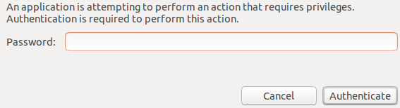
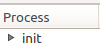
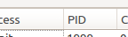
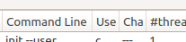
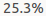
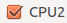
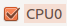

"""automatic test suite for process explorer Run this on a quad cpu machine """ import subprocess try: subprocess.Popen(["killall", "python"]) except: pass def start_processexplorer(): p = subprocess.Popen(["python","/home/cpwolff/procexp/code/trunk/procexp.py"]) #p = subprocess.Popen("procexp.sh") wait(, 20) type(Pattern().targetOffset(-175,-21), "test") click() click() def maximize_process_explorer(): #process explorer full size type(Key.SPACE, KEY_ALT) type("x") click(Pattern().similar(0.98).targetOffset(-40,14)) doubleClick(Pattern().similar(0.90)) doubleClick(Pattern().similar(0.96)) def startproperties_25process(): maximize_process_explorer() wait(, 20) rightClick() def test_cpu25percent(): """test a cpu bound process to take 25% CPU at a 4 core machine""" #start CPU bound process proc = subprocess.Popen(["python", "-c", "while True: pass"]) start_processexplorer() startproperties_25process() #show process detail screen type(Key.DOWN) type(Key.DOWN) type(Key.DOWN) type(Key.DOWN) type(Key.DOWN) type(Key.DOWN) type(Key.ENTER) #wait until we see usage of about 25% wait(Pattern().similar(0.86), 60) wait(, 90) p = subprocess.Popen(["killall", "python"]) def test_affinity(): """test affinity settings of a process""" #start CPU bound process proc = subprocess.Popen(["python", "-c", "while True: pass"]) start_processexplorer() startproperties_25process() type(Key.DOWN) type(Key.ENTER) click(Pattern().exact()) click(Pattern().exact()) click(Pattern().exact()) click() type(Key.F4, KEY_ALT) start_processexplorer() startproperties_25process() type(Key.DOWN) type(Key.ENTER) wait(Pattern().similar(0.86)) wait(Pattern().similar(0.95)) wait(Pattern().similar(0.98)) wait(Pattern().similar(0.98)) p = subprocess.Popen(["killall", "python"]) def testdeadprocess(): start_processexplorer() maximize_process_explorer() proc = subprocess.Popen(["python", "-c", "import time; time.sleep(10)"]) wait(, 20) rightClick() type(Key.DOWN) type(Key.DOWN) type(Key.DOWN) type(Key.DOWN) type(Key.DOWN) type(Key.DOWN) type(Key.ENTER) wait(Pattern().similar(0.93), 60) subprocess.Popen(["killall", "python"]) if __name__ == "__main__": for i in range(10): test_cpu25percent() test_affinity() testdeadprocess() print "************************" print "* all tests succeeded *" print "************************"